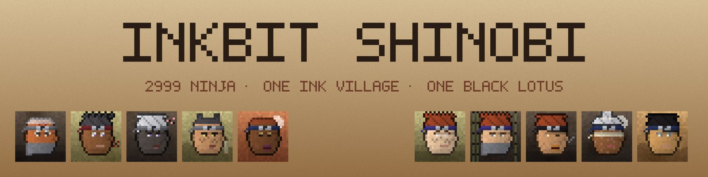

INK VILLAGE Inkbit Shinobi opens tonight 20:36 · free · 10 per walletTHE INK SEA Inkbit Tides: 5,555 pirate cards · full game rules on Inkbit NewsHAUNTED HILLS 5,545 ghosts · free until Nov 4, 20:00NEON CITY 2,350 citizens · free until Nov 4, 11:43INK STREET 5,630 brokers hired · final round free until Nov 6DANGER ZONE All 3,333 Zombie Punks are out · 418 householdsMARKET Press Cards lead at $0.31 · Apes $0.23 · Fighter $0.13THE ARENA Grand Champion is #536THE CAPITAL Governor #1616 is in officeNEW Rankings and the Kingdom Board are openNOTICE Inkbit never DMs you to verify your walletINK VILLAGE Inkbit Shinobi opens tonight 20:36 · free · 10 per walletTHE INK SEA Inkbit Tides: 5,555 pirate cards · full game rules on Inkbit NewsHAUNTED HILLS 5,545 ghosts · free until Nov 4, 20:00NEON CITY 2,350 citizens · free until Nov 4, 11:43INK STREET 5,630 brokers hired · final round free until Nov 6DANGER ZONE All 3,333 Zombie Punks are out · 418 householdsMARKET Press Cards lead at $0.31 · Apes $0.23 · Fighter $0.13THE ARENA Grand Champion is #536THE CAPITAL Governor #1616 is in officeNEW Rankings and the Kingdom Board are openNOTICE Inkbit never DMs you to verify your wallet

District 11 · The Ink Village
Inkbit Shinobi
2,999 ninja. One Ink Village. One Black Lotus.
WHERE THEY CAME FROM
High in the mountains behind the Capital, above the clouds that hide the Pet Meadows, lies the Ink Village. Its children learn to move like ink on paper: silent, fast and impossible to wipe away.
Every scroll in the village is painted on old brown paper, and so is every ninja. Nobody outside the mountains has ever seen the village gate, until now.
WHO THEY ARE
Students start at the Academy and earn their plate as Genin. The good ones become Chunin, the best become Jonin, and a handful wear the Elite Plate. Above them sit five Village Masters, and above them a single Grand Master in the maroon hat.
Not every ninja stayed loyal. Some cut a slash through their village plate and walked away. The worst of them gathered under a black lotus: one Lotus Lord and eight Thorns. Between the village and the lotus wander the Rogue Ninja, who answer to no one.
WHAT THEY DO
They guard the mountain passes, carry messages across the Kingdom and keep an eye on the Arena below. Each ninja wears their rank on their head: a cloth band, a plate, a hood, a straw hat or a master's hat. Who holds which rank stays hidden in the shadows until the reveal.
High in the mountains behind the Capital, the gate of the Ink Village opens tonight at 20:36. 2,999 Inkbit Shinobi are coming down from the clouds, from Academy Students and Genin to Jonin, Village Masters and one Grand Master.
Entry is free, ten ninja per wallet, and the gate stays open for two days, until November 5 at 20:36. Somewhere among them hide a Lotus Lord and eight Thorns of the Black Lotus. Their faces stay in the shadows until the reveal.